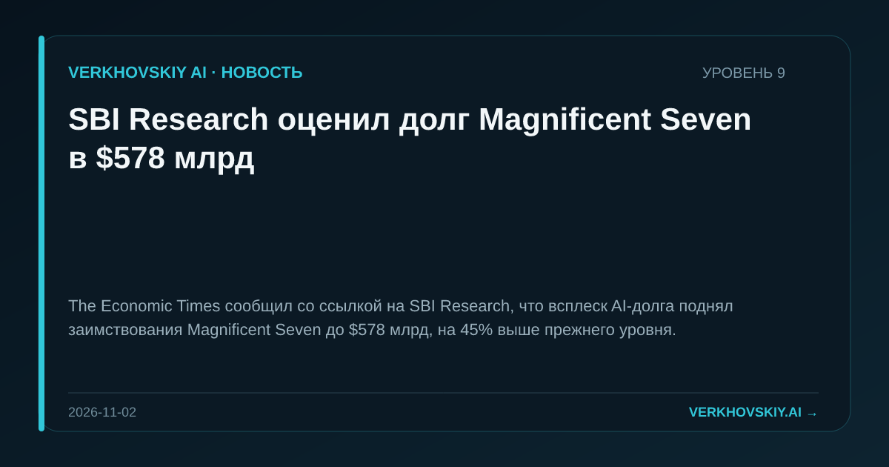

SBI Research оценил долг Magnificent Seven в $578 млрд
The Economic Times сообщил со ссылкой на SBI Research, что всплеск AI-долга поднял заимствования Magnificent Seven до $578 млрд, на 45% выше прежнего уровня.

The Economic Times сообщил со ссылкой на SBI Research, что всплеск AI-долга поднял заимствования Magnificent Seven до $578 млрд, на 45% выше прежнего уровня.